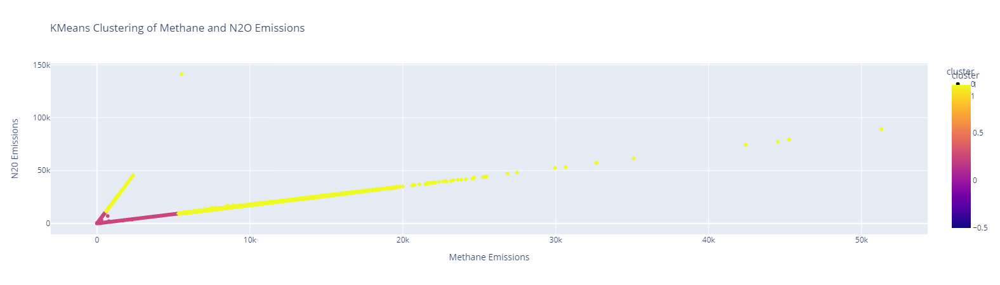
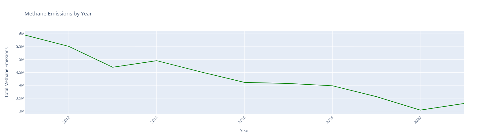
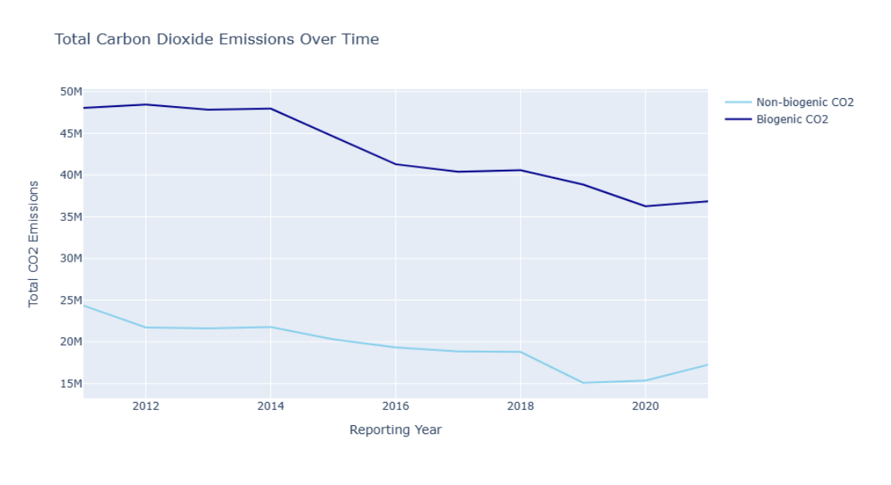

Power Plants
As we delve into the complex environmental challenges that exist in today’s world, human activity has begun to have detrimental and irreversible damage to the planet in which we inhabit. With the wide range of activities that contribute to these environmental issues, energy consumption is a primary factor, with the power plant sector standing as a towering contributor to the greenhouse gas emissions in the United States. When examining the emissions data, power plants emit significantly more methane and nitrous oxide emissions, two major culprits in the realm of harmful emissions, than other industries. In the broad topic of environmental responsibility, this chapter aims to investigate the complexities surrounding the environmental footprint of power plants.
Dataset Overview
Fuel Emissions (EPA)
This dataset was sourced from the US Environmental Protection Agency (EPA) that contains 276,961 data points. The file contains data collected by the Greenhouse Gas Reporting Program for 2010-2021 and was reported to the EPA by facilities as of 08/12/2022. The Greenhouse Gas Reporting Program (GHGRP) collects Greenhouse Gas (GHG) data from large emitting facilities, suppliers of fossil fuels and industrial gases that result in GHG emissions when used, and facilities that inject carbon dioxide underground (EPA, 2023). The emissions data is presented in units of metric tons of carbon dioxide equivalent using GWP's from IPCC's AR4.
The datapoints contain the reported Methane and Nitrous Oxide emissions by different facilities, with features such as facility ID, facility name, city, state, reporting year, and industry type. The original dataset contained 276,960 data points with 16 features. First, we dropped columns ‘Other fuel name’ and ‘Blend fuel name’ because 99.53% and 99.82% of the data points were missing a value in these columns, respectively. We also dropped the ‘FRS ID’ column because it was associated with ‘facility ID’, and 10% of the values were missing. For similar reasons, we also deleted ‘industry type (subparts)’ because it was highly correlated with the column ‘industry type (sectors)’. We created a correlation heat map of the remaining numeric values.
Based on this correlation heat map, methane and nitrous oxide emissions of a facility are highly correlated with each other, suggesting that a facility with high methane emissions would also have high nitrous oxide emissions. This is an interesting relationship that could be explored further. To investigate the relationship between the various coal fired power plant’s methane and nitrous oxide emissions, we graphed the distribution using a scatter plot to identify any patterns. As seen in figure 9, the distribution follows a very specific linear pattern. To consider why this may be, we observed if there was any pattern among the two linear relationships and the features in the dataset but found that there was no pattern.
We performed K-Means clustering to try to cluster the data points into these two groups so we can observe why this distribution is the way it is. As can be seen from the plot below, the clustering analysis was not successful in identifying the 2 separate distributions.
Next, we checked for mutual exclusivity among the two distinct lines and found that there was a significant number of cities, states and facilities in both lines, and therefore there is no mutual exclusivity. This may be due to underlying differences in the various facilities’ operational practices and procedures, which are not provided in the emissions data set. Through further data exploration and visualization, we discovered that the data points from the year 2010 were insignificant and unrepresentative of the emissions for that year, by looking at the total reported emissions over the time frame.
We see there is significantly less reported emissions in the year 2010. We discovered that the data from 2010 made up less than 0.2% of the data, and therefore should not be considered in analysis, as it is highly likely that the data points are not representative of the entire year. After performing these data cleaning steps, there 276,328 data points remaining in the dataset. An example of the remaining data can be found in figure 12. We also performed min-max scaling normalization on the numerical columns on the dataset, for some of our analysis.
Unit Emissions (EPA)
This dataset was also obtained through the EPA and was the sister set of the Fuel Emissions data. Features of this dataset include industry type, unit name, and biogenic unit CO2 emissions, which is CO2 produced by biological processes. The cleaning process for this dataset was similar to fuel emissions: we dropped columns that were missing a lot of values, along with all datapoints from 2010. Facility ID, FRS ID, Industry Type (subparts) were also removed.
Fuel & Unit Emissions Analysis
The emissions dataset contains the reported emissions per industry, which allows us to confirm that power plants produce a consequential number of emissions compared to other industries like the chemicals or waste industries. The extreme differences are visualized in figure 14.

As mentioned before, carbon dioxide is an important GHG. Although CO2 emissions arise from various natural sources, the rise in atmospheric CO2 levels since the industrial revolution is primarily attributed to human-related emissions. Moreover, CO2 concentrations are rising mostly because of the fossil fuels that people are burning for energy. According to the EPA, in 2021, carbon dioxide contributed to 79% of all U.S. greenhouse gas emissions from human activities (EPA, 2023). Based on figure 15, we see that the biogenic and non-biogenic CO2 has decreased from 2011 to 2020, however, in 2020, there has been an increase.
Within the power plant industry, there is a wide spectrum of facility types, ranging from traditional fossil fuel plants to solar and wind installations, each contributing to its unique environmental footprint and consequences. Among the many types of power plants, coal-fired power plants stand out significantly as a major concern due to their immense contributions to both methane and nitrous oxide emissions in the United States.
Coal Fired Power Plants
To investigate this further, we will utilize the emissions dataset’s ‘general fuel type’ feature that labels how that facility is fueled. Through our data exploration and visualization, we found that coal fired power plants produce more methane and nitrous oxide emissions than the other plant fuel types, by a compelling amount. Figure 16 highlights the disproportionate contribution of coal-fired power plants to the overall greenhouse gas emissions in the U.S. from 2011-2021.
With most of the facilities’ reported emissions in the emissions dataset coming from coal-fired power plants specifically, we continued to focus our analysis on the environmental impact of coal plants. This will allow us to delve deeper into the specific relationships surrounding human activity and the detrimental effects it has on the environment.
Most coal fired power plants in the United States were built and began operating in the 1970s and 1980’s and have begun to retire due to competition from other generating sources that are generally cheaper and cleaner gases. (U.S. EIA, 2023) We can see the effects of these closures in the emissions dataset, by observing the change in emissions from coal-fired power plants over the given timeframe. Over the past 10 years, power plant emissions have generally declined overall with spikes in 2014 and 2021, as seen in figure 17.
Coal-fired power plants tend to emit more CO2. When coal is burned, its carbon component reacts to the oxygen in the air to produce heat energy. CO2 is a byproduct of this chemical process. Coal contains more carbon than oil or gas, and when we burn these fuels, the higher amount of carbon in coal reacts to form CO2 (MIT Climate Portal Writing Team, 2022).
From figure 15, we see non-biogenic emissions initially have decreased, which corroborates the fact that coal fired power plants were being replaced with natural gas as natural gas has less climate pollution (Brady, 2023). However, emissions have gradually increased since 2013. According to the U.S. Government Accountability Office (GAO), the EPA reported power plant emissions have increased from 2020 to 2021, reflects growth in coal-fired power generation (GAO, 2022). While coal plant closures represent a positive step toward reducing emissions, the lingering impact of these gases continues to grow. Greenhouse gases (GHGs), emitted during the combustion of fossil fuels, possess unique atmospheric characteristics that contribute to a prolonged environmental footprint. Unlike some pollutants that disperse rapidly, GHGs exhibit varied lifespans, ranging from a few years to thousands (EPA, 2023). As mentioned before, these gases significantly contribute to the greenhouse effect, trapping heat within the Earth's atmosphere. CO2, the primary emission from coal combustion, can persist for centuries, influencing climate dynamics long after its release. Methane, with its heightened heat-trapping potential, has a shorter atmospheric lifetime but remains impactful for about a decade. Nitrous oxide, a potent greenhouse gas, endures for more than a century (Bailey & Callery, 2023).
Emissions Across the United States
When looking into coal-fired power plant emissions by state, Texas has a significant number of emissions compared to the other U.S. States. States like Illinois, Indiana, Ohio, Kentucky, as well as a few surrounding states also have a high amount of reported methane Emissions from coal fired power plants.
And as shown in figure 19 below, the distribution of N2O emissions among the US states is like the methane emissions. Again, Texas has a significant number of emissions, and states Illinois, Indiana, Ohio, Kentucky, as well as a few surrounding states also have a high amount of reported N2O Emissions from coal fired power plants.
We then wanted to see which state emitted the most CO2. From figure 20, we see that Iowa emits the most CO2 generated from human activity.
Iowa emits the most non-biogenic CO2 followed by Florida, Nebraska, California, and New York. It is not surprising that California is one of the top states that emits high concentrations of CO2 generated by human activity. As mentioned before, California has the most power plants in the United States. However, Iowa does not have many power plants (get number), so why does it emit the most human generated CO2? Iowa’s carbon dioxide emissions are primarily from the electricity sector, which accounts for 71.7% of the state’s total emissions (Choose Energy, 2023). Additionally, in 2021, Iowa experienced a 7.20 metric million tons carbon dioxide equivalent (MMtCO2e), which means the total warming effect of the additional greenhouse gases released is equivalent to the warming effect of emitting 7.20 million metric tons of carbon dioxide over 2020-2021 (Iowa Department of Natural Resources, 2022).
Because facilities can vary in size and therefore produce different amounts of greenhouse gas emissions, we investigated if states with high emissions had one facility with very high emissions, or many facilities spread out across the state.
This map shows the total reported methane emissions, represented by the darkness of the blue dot, and the total reported N2O emissions, represented by the size of the dot. This provided new insight to us, as it shows that some cities are largely responsible for an entire state’s emissions. For example, Colstrip, Montana, and Juliette, Georgia all have a significant amount of both methane and N2O emissions. While Texas, who has the highest statewide emissions, is made of many smaller and lighter dots, spread around the state.
When looking at the carbon dioxide generated by human activity, we see the same cities mentioned above (Colstrip, Montana, and Juliette Georgia). See figure 22.